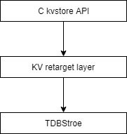
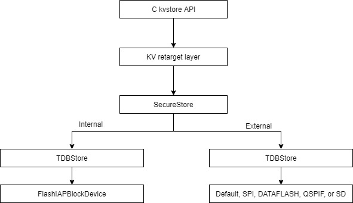
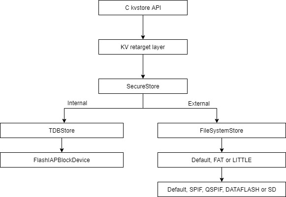

Configuration
This page describes the build-time configurable parameters for storage in Mbed OS:
- KVStore configuration.
- LittleFS configuration.
- Default BlockDevice configuration.
- Default FileSystem configuration.
KVStore configuration
Mbed OS provides a storage solution based on the KVStore API. Different components that implement the KVStore API are allocated and configured to support the global API.
The configuration of the KVStore storage solution is composed of two levels:
- Use the top level
mbed_lib.jsonto selet the predefined configuration by setting the parameterstorage_type. - Use the subfolder
mbed_lib.jsonfor each configuration to fine tune the relevant parameters for the selected configuration.
Configuration structure
kvstore
conf
mbed_lib.json
tdb_external
mbed_lib.json
filesystem
mbed_lib.json
tdb_internal
mbed_lib.json
The KVStore configuration file structure includes four configuration files. You can use the topmost configuration file to set up the full configuration of the storage by defining a single parameter (storage_type) to one of the predefined configurations. You can use the configuration files in the subfoldersto implement the above top level configurations.
You can find the configuration files under conf/<configuration name>:
conf/tdb_internal- The storage typeTDB_INTERNALconfiguration is intended to be used when all data will be stored in internal memory only. There is no need for additional security features. A single TDBStore object will be allocated in internal flash.conf/tdb_external- The storage typeTDB_EXTERNALconfiguration provides full security and is intended to be used when data is stored in external flash. It allocates: SecureStore, TDBStore in external flash and TDBStore in internal flash for rollback protection (RBP).conf/filesystem- This configuration allocates SecureStore, FileSystemStore, filesystem, TDBStore in internal memory and the required block devices. The allocated file system is selected according to the COMPONENT set intargets.json(FATFS for SD card and LITTLEFS for SPIF). However, you can set this differently by overriding the respective parameter. Use this configuration if you need the file system with the POSIX API in addition to the set/get API.
A standalone block device is allocated for each component in internal and external memory and SD cards as required for the configurations. The full size of the memory allocated for each block device will be used by the respective component.
Configuration parameters
The following is a list of all storage parameters available and their descriptions:
storage_type- Used to select one of the predefined configurations.TDB_INTERNAL.TDB_EXTERNAL.FILESYSTEM.
default_kv- This string represents the path for the default KVStore instantiation. Applications can pass an empty path (only the key name) or pass the generated name for this parameter (MBED_CONF_STORAGE_DEFAULT_KV) as the path to use this configuration.internal_size- The size in bytes for the internal FlashIAP block device. This, together with theinternal_base_address, adjusts the size and location where the block device resides on memory. If not defined, the block device uses the maximum size available.internal_base_address- The address where the internal FlashIAP blockDevice starts. This helps to prevent collisions with other needs, such as firmware updates. If this is not defined, the start address is set to the first sector after the application code ends inTDB_internal. In any external configurations with rollback protection support, it will be set to end of flash -rbp_internal_size.rbp_number_of_entries- This sets the number of entries allowed for rollback protection. The default is set to 64. This parameter controls the maximum number of different keys that can be created with rollback protection flag.rbp_internal_size- This sets the size for the rollback protection of TDBStore in the internal memory. The base address is calculated as the flash ends address, or the size.filesystem- Options are FAT, LITTLE or default. If not set or set to default, the file system type will be selected according to the storage component selected for the board in thetargets.jsonfile: FAT for "components": ["SD"] and Littlefs for "components": ["SPIF"].blockdevice- Options are default, SPIF, DATAFLASH, QSPIF or SD. If the file system is set to default, this parameter is ignored.external_size- The size of the external block device in bytes. If this is not set, the maximum available size will be used.external_base_address- The start address of the external block device. If this is not set, 0 address will be used.mount_point- Mount point for the file system. This parameter will be ignored if the file system is set to default.folder_path- Path for the working directory where the FileSystemStore stores the data.
Storage configuration
Below is the main storage configuration in the mbed_lib json file:
{
"name": "storage",
"config": {
"storage_type": {
"help": "Options are TDB_INTERNAL, TDB_EXTERNAL, or FILESYSTEM",
"value": "NULL"
},
"default_kv": {
"help": "A string name for the default kvstore configurtaion",
"value": "kv"
}
}
}
TDB_INTERNAL
Use this internal configuration for targets willing to save all the data in internal flash.
TDB_Internal
In this configuration, all KVStore C APIs will be mapped to the TDBStore in the internal flash. To use this configuration, set the storage_type parameter in storage mbed_lib.json to TDB_INTERNAL.
Below is the TDB_INTERNAL configuration in mbed_lib.json:
{
"name": "storage_tdb_internal",
"config": {
"internal_size": {
"help": "Size of the FlashIAP block device. default size will be from internal_base_address till the end of the internal flash.",
"value": "0"
},
"internal_base_address": {
"help": "If default, the base address is set to the first sector after the application code ends.",
"value": "0"
}
}
}
For this configuration, please define the section of the internal storage that will be used for data, by defining these parameters in your app.config file: internal_base_address and internal_size. If not defined, the storage will start in the first sector immediately after the end of the application. This can reduce the ability to update the application with a bigger one.
TDB_External
TDB_External
TDB_EXTERNAL uses a TDBStore in the internal flash for security rollback protection and a TDBStore on the external flash for the data.
In this configuration, all KVStore C API calls are mapped to work with the SecureStore class. This class handles the use of the two TDBStores. Unless configured differently, the external TDBStore will work on top of the default block device, and the internal TDBStore will work with the FlashIAPBlockdevice.
You can set the external TDBStore block device to any of the following block devices: SPIF, QSPIF, DATAFASH and SD.
You can enable this configuration by setting storage_type to TDB_EXTERNAL in storage mbed_lib.json.
Below is the TDB_EXTERNAL configuration in mbed_lib.json:
{
"name": "storage_tdb_external",
"config": {
"rbp_internal_size": {
"help": "Default is the size of the 2 last sectors of internal flash",
"value": "0"
},
"internal_base_address": {
"help": "If default, the base address is set to the first sector after the application code ends.",
"value": "0"
},
"blockdevice": {
"help": "Options are default, SPIF, DATAFASH, QSPIF, SD or other. If default the block device will be chosen by the defined component. If other, override get_other_blockdevice() to support block device out of Mbed OS tree.",
"value": "default"
},
"external_size": {
"help": "Size in bytes of the external block device, if default the maximum size available is used.",
"value": "0"
},
"external_base_address": {
"help": "The default will set start address to address 0",
"value": "0"
}
}
}
FILESYSTEM
FILESYSTEM
The FILESYSTEM configuration resembles the EXTERNAL with the difference that it uses FileSystemStore on the external flash. By default, FileSystemStore used the default file system and the default block device.
In this configuration, all KVStore C API paths are mapped to the SecureStore class. This class handles the use of the internal TDBStore or external FileSystemStore.
You can enable this configuration by setting storage_type to FILESYSTEM in storage mbed_lib.json.
Below is the FILESYSTEM configuration in mbed_lib.json:
{
"name": "storage_filesystem",
"config": {
"rbp_internal_size": {
"help": "Default is the size of the 2 last sectors of internal flash",
"value": "0"
},
"internal_base_address": {
"help": "If default, base address is the first sector after the application code",
"value": "0"
},
"filesystem": {
"help": "Options are default, FAT or LITTLE. If default value the filesystem is chosen by the blockdevice type",
"value": "default"
},
"blockdevice": {
"help": "Options are default, SPIF, DATAFASH, QSPIF, SD or other. If default, the block device will be chosen according to the component defined in targets.json. If other, override get_other_blockdevice() to support block device out of Mbed OS tree.",
"value": "default"
},
"external_size": {
"help": "Size in bytes of the external block device, if default value, the maximum size available is used.",
"value": "0"
},
"external_base_address": {
"help": "The default will set start address to address 0",
"value": "0"
},
"mount_point": {
"help": "Where to mount the filesystem.",
"value": "kv"
},
"folder_path": {
"help": "Path for the working directory where the FileSystemStore stores the data",
"value": "kvstore"
}
}
}
If the file system is not set, the default file system and block device will be applied, and blockdevice, external_size and external_base_address will be ignored.
Configuration functions API
Applications must call the function kv_init_storage_config() to instantiate any of the required default configurations. This function is defined as weak to allow it to be overridden by a user implementation of the instantiation.
Override user-defined setup
To create a more complex setup, including using other block devices, such as MBRBlockDevice or SlicingBlockDevice, you need to override the kv_init_storage_config function and generate any storage configuration.
LittleFS configuration
LittleFS provides several configuration options that you can use to tweak the performance of the file system on different hardware. By default, this file system finds the optimal configuration from the underlying block device's geometry, but you can override this to optimize special situations. For example, if your device has a large amount of RAM, you can increase the read_size and prog_size configuration options for a minor speed improvement.
Note that LittleFS has 4 levels of debug logging. By default, all logging is enabled except for enable_debug. Setting enable_debug to true makes the log output very verbose, and the output is useful for bug reports.
Configuration parameters
------------------------
Name: littlefs.block_size
Description: Size of an erasable block. This does not impact ram consumption and may be larger than the physical erase size. However, this should be kept small as each file currently takes up an entire block.
Defined by: library:littlefs
Macro name: MBED_LFS_BLOCK_SIZE
Value: 512 (set by library:littlefs)
Name: littlefs.enable_assert
Description: Enables asserts, true = enabled, false = disabled, null = disabled only in release builds
Defined by: library:littlefs
No value set
Name: littlefs.enable_debug
Description: Enables debug logging, true = enabled, false = disabled, null = disabled only in release builds
Defined by: library:littlefs
No value set
Name: littlefs.enable_error
Description: Enables error logging, true = enabled, false = disabled, null = disabled only in release builds
Defined by: library:littlefs
No value set
Name: littlefs.enable_info
Description: Enables info logging, true = enabled, false = disabled, null = disabled only in release builds
Defined by: library:littlefs
No value set
Name: littlefs.enable_warn
Description: Enables warn logging, true = enabled, false = disabled, null = disabled only in release builds
Defined by: library:littlefs
No value set
Name: littlefs.intrinsics
Description: Enable intrinsics for bit operations such as ctz, popc, and le32 conversion. Can be disabled to help debug toolchain issues
Defined by: library:littlefs
Macro name: MBED_LFS_INTRINSICS
Value: 1 (set by library:littlefs)
Name: littlefs.lookahead
Description: Number of blocks to lookahead during block allocation. A larger lookahead reduces the number of passes required to allocate a block. The lookahead buffer requires only 1 bit per block so it can be quite large with little ram impact. Should be a multiple of 32.
Defined by: library:littlefs
Macro name: MBED_LFS_LOOKAHEAD
Value: 512 (set by library:littlefs)
Name: littlefs.prog_size
Description: Minimum size of a block program. This determines the size of program buffers. This may be larger than the physical program size to improve performance by caching more of the block device.
Defined by: library:littlefs
Macro name: MBED_LFS_PROG_SIZE
Value: 64 (set by library:littlefs)
Name: littlefs.read_size
Description: Minimum size of a block read. This determines the size of read buffers. This may be larger than the physical read size to improve performance by caching more of the block device.
Defined by: library:littlefs
Macro name: MBED_LFS_READ_SIZE
Value: 64 (set by library:littlefs)
Name: littlefs2.block_cycles
Description: Number of erase cycles before a block is forcefully evicted. Larger values are more efficient but cause less even wear distribution. 0 disables dynamic wear-leveling.
Defined by: library:littlefs2
Macro name: MBED_LFS2_BLOCK_CYCLES
Value: 1024 (set by library:littlefs2)
Name: littlefs2.block_size
Description: Size of a logical block. This does not impact ram consumption and may be larger than the physical erase block. If the physical erase block is larger, littlefs will use that instead. Larger values will be faster but waste more storage when files are not aligned to a block size.
Defined by: library:littlefs2
Macro name: MBED_LFS2_BLOCK_SIZE
Value: 512 (set by library:littlefs2)
Name: littlefs2.cache_size
Description: Size of read/program caches. Each file uses 1 cache, and littlefs allocates 2 caches for internal operations. Larger values should be faster but uses more RAM.
Defined by: library:littlefs2
Macro name: MBED_LFS2_CACHE_SIZE
Value: 64 (set by library:littlefs2)
Name: littlefs2.enable_assert
Description: Enables asserts, true = enabled, false = disabled, null = disabled only in release builds
Defined by: library:littlefs2
No value set
Name: littlefs2.enable_debug
Description: Enables debug logging, true = enabled, false = disabled, null = disabled only in release builds
Defined by: library:littlefs2
No value set
Name: littlefs2.enable_error
Description: Enables error logging, true = enabled, false = disabled, null = disabled only in release builds
Defined by: library:littlefs2
No value set
Name: littlefs2.enable_info
Description: Enables info logging, true = enabled, false = disabled, null = disabled only in release builds
Defined by: library:littlefs2
No value set
Name: littlefs2.enable_warn
Description: Enables warn logging, true = enabled, false = disabled, null = disabled only in release builds
Defined by: library:littlefs2
No value set
Name: littlefs2.intrinsics
Description: Enable intrinsics for bit operations such as ctz, popc, and le32 conversion. Can be disabled to help debug toolchain issues
Defined by: library:littlefs2
Macro name: MBED_LFS2_INTRINSICS
Value: 1 (set by library:littlefs2)
Name: littlefs2.lookahead_size
Description: Size of the lookahead buffer. A larger lookahead reduces the allocation scans and results in a faster filesystem but uses more RAM.
Defined by: library:littlefs2
Macro name: MBED_LFS2_LOOKAHEAD_SIZE
Value: 64 (set by library:littlefs2)
BlockDevice - default configuration
The Mbed OS configuration allows you to add block devices as components using the targets.json file or target overrides in the application configuration file.
When one of the following components is enabled, a default block device is set in the system ("components": ["xxx","yyy"]):
- SPIF
- QSPIF
- DATAFLASH
- SD
- FLASHIAP
Components can coexist in the system. A device can have SPIF and SD or any combination of block devices enabled but only one default block device.
The list above is in the order of precedence shows which block device is the default one if more than one component is enabled.
Configuring components
For example, the following entry in targets.json enables the SD component:
"K64F": {
"components": ["SD"],
"core": "Cortex-M4F",
"supported_toolchains": ["ARM", "GCC_ARM", "IAR"],
"inherits": ["Target"],
"features": ["STORAGE"],
"release_versions": ["2", "5"]
}
The following mbed_app.json snippet enables the SPI flash component when compiling for the MTB_ADV_WISE_1570 target:
"target_overrides": {
"MTB_ADV_WISE_1570": {
"target.components_add": ["SPIF"]
}
}
Please note that while a default block device exists, an application is not forced to use it and can create its own one.
Enabling the storage feature, SD component, and overriding the default pins can be done within mbed_app.json. Using the NRF52_DK target as an example:
"target_overrides": {
"NRF52_DK": {
"target.features_add": ["STORAGE"],
"target.components_add": ["SD"],
"sd.SPI_MOSI": "D11",
"sd.SPI_MISO": "D12",
"sd.SPI_CLK": "D13",
"sd.SPI_CS": "D10"
}
}
These values override the default pins assigned to the parameters: MBED_CONF_SD_SPI_MOSI, MBED_CONF_SD_SPI_MISO, MBED_CONF_SD_SPI_CLK and MBED_CONF_SD_SPI_CS present within the mbed_lib.json file for the SD component in Mbed OS.
Overriding default block device implementation
The get default instance is implemented as MBED_WEAK at features/storage/system_storage/SystemStorage.cpp. That means that a user can override it by implementing the function without MBED_WEAK and change the default block device for a given application.
#include "HeapBlockDevice.h"
BlockDevice *BlockDevice::get_default_instance()
{
static HeapBlockDevice default_bd(32 *1024);
return &default_bd;
}
FileSystem - default configuration
The Mbed OS configuration allows you to add block devices as components using the targets.json file or target overrides in the application configuration file. When you configure a component of SPIF, DATAFLASH or SD, the system supports one default file system.
Please note that while a default file system exists, an application is not forced to use it and can create its own one.
The default file system is created based on the default block device due to performance considerations.
SPIF and DATAFLASH block devices support the Little file system, and the SD block device supports the FAT file system. However, the application can ovveride this behavior.
Overriding the default FileSystem implementation
The get default instance is implemented as MBED_WEAK at features/storage/system_storage/SystemStorage.cpp. That means you can overridde it by implementing the function without MBED_WEAK and change the default block device for a given application.
The following example overrides the get default instance of and always returns a FAT file system regardless of the block device type:
#include "FATFileSystem.h"
FileSystem *FileSystem::get_default_instance()
{
static FATFileSystem default_fs("fs" BlockDevice::get_default_instance());
return &default_fs;
}